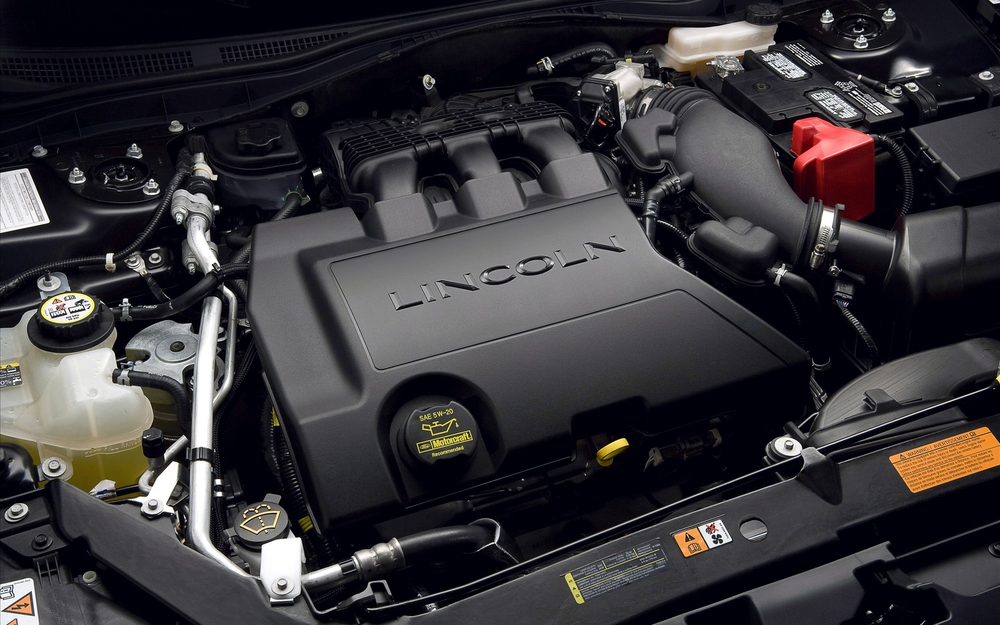
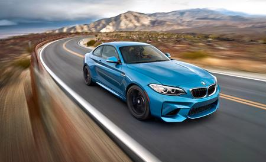

I really love race of cars and also design cars in paper, I like drawing cars. But not only is the design of how it will be look, is:
Exterior design
The stylist responsible for the design of the exterior of the vehicle develops the proportions, shape, and surfaces of the vehicle. Exterior design is first done by a series of digital or manual drawings. Progressively, drawings that are more detailed are executed and approved by appropriate layers of management. Clay (industrial plasticine) and or digital models are developed from, and along with the drawings.
Interior design
The stylist responsible for the design of the vehicle interior develops the proportions, shape, placement, and surfaces for the instrument panel, seats, door trim panels, headliner, pillar trims, etc. Here the emphasis is on ergonomics and the comfort of the passengers. The procedure here is the same as with exterior design (sketch, digital model and clay model).
Color and trim design
The color and trim designer is responsible for the research, design, and development of all interior and exterior colors and materials used on a vehicle. These include paints, plastics, fabric designs,etc. Color, contrast, texture, and pattern must be carefully combined to give the vehicle a unique interior environment experience. Designers work closely with the exterior and interior designers.
Graphic design
The design team also develops graphics for items such as: badges, decals, dials, switches, kick or tread strips, liveries.
The kind of car that I prefer are these ones:

You can visit this website, is amazing for learn more about cars: Car Connection